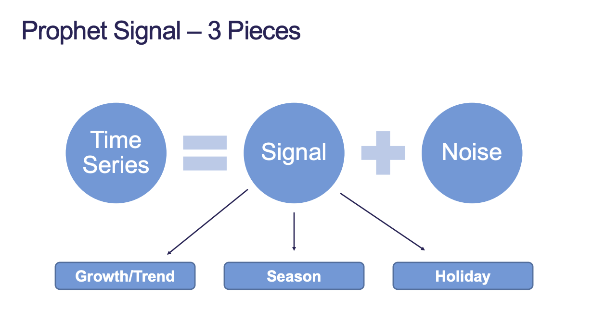
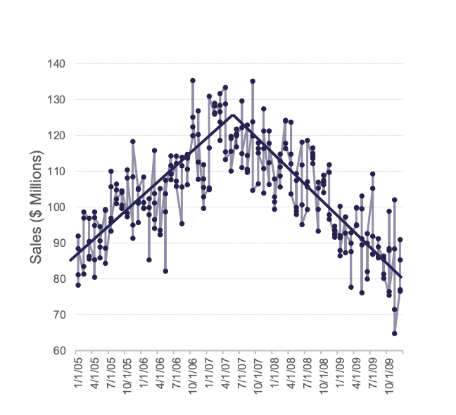
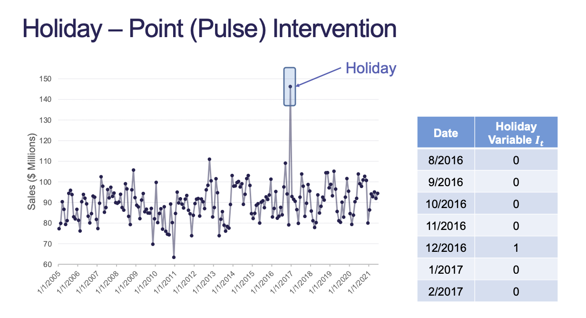
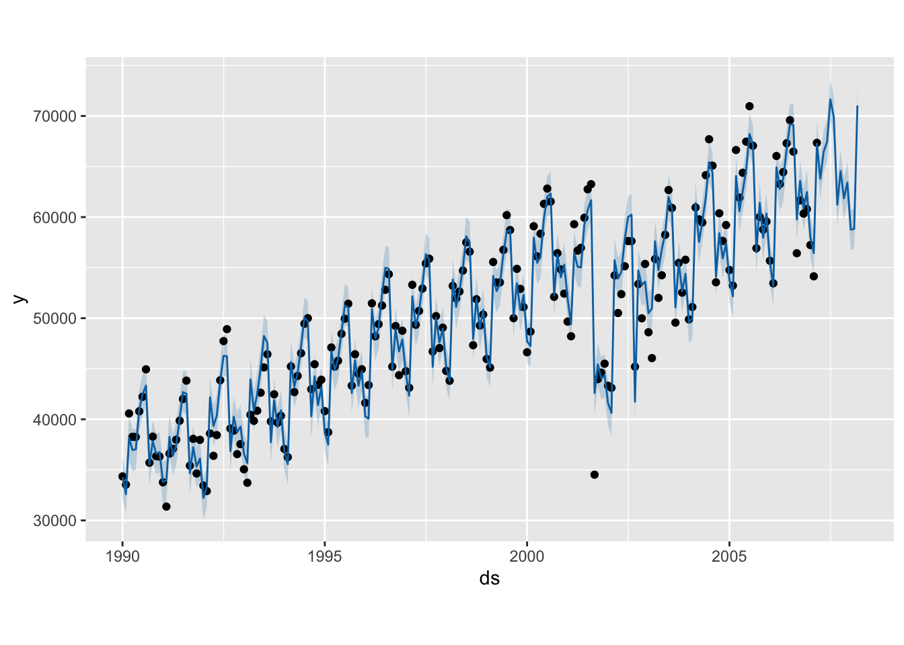

Registered S3 method overwritten by 'quantmod':
method from
as.zoo.data.frame zoo
Code
library(aTSA)
Attaching package: 'aTSA'
The following objects are masked from 'package:tseries':
adf.test, kpss.test, pp.test
The following object is masked from 'package:graphics':
identify
Code
library(forecast)
Attaching package: 'forecast'
The following object is masked from 'package:aTSA':
forecast
Code
USAirlines <-read.csv("https://raw.githubusercontent.com/sjsimmo2/TimeSeries/master/usairlines.csv")passenger <-ts(USAirlines$Passengers, start =1990, frequency =12)train <-subset(passenger, end =length(passenger) -12)test <-subset(passenger, start =length(passenger) -11)
2 Introduction
Facebook’s Prophet model is used for forecasting univariate time series by decomposing it into pieces.
Prophet breaks up the signal into 3 pieces:
Growth / Trend
Season
Holiday

Figure 1: Prophet Breakdown
3 Growth / Trend
The growth / trend component uses trend lines as regressors in the model. Instead of single trends, this trend is piecewise using knots. The user can specify knots or it is automatically chosen.

Figure 2: Growth / Trend
Trend can also be a logarithmic trend.
4 Seasonal
Fourier variables are used to account for seasonal patterns. Prophet was originally designed for daily data with weekly and yearly seasonal effects. By default, yearly effects have 10 Fourier pairs and weekly effects have 3 Fourier pairs.
5 Holiday
The holiday effect is just point interventions!

Figure 3: Holiday - Point (Pulse) Intervention
6 Prophet Model
In prophet, you need to use specific variable names for the model to run. For any date, you need to use ds:
Code
library(prophet)
Loading required package: Rcpp
Loading required package: rlang
Code
holidays <-data.frame(holiday ="Sep11",ds =as.Date(c("2001-09-01", "2001-10-01", "2001-11-01", "2001-12-01", "2002-01-01", "2002-02-01", "2002-09-01") ),lower_window =0,upper_window =0)prophet_data <-data.frame(ds =seq(as.Date("1990-01-01"), as.Date("2007-03-01"), by ="m"), y = train)# Make a baseline model flagging our specified holidays as intervention variables# Add US country holidays# Don't use default seasonality.## Specify period to not use daily seasonality and use monthly instead## Specify fourier.order to use 6 pairsprof <-prophet(holidays = holidays) %>%add_country_holidays("US") %>%add_seasonality(name ="monthly", period =30.5, fourier.order =6) %>%fit.prophet(prophet_data)
Disabling weekly seasonality. Run prophet with weekly.seasonality=TRUE to override this.
Disabling daily seasonality. Run prophet with daily.seasonality=TRUE to override this.
Warning in make_holidays_df(year.list, m$country_holidays): Holidays for US are
only supported from 1995 to 2044
We build the prophet model in components–similar to a ggplot.
Note that lower_window and upper_window extend the intervention to day - lower and day + upper for ALL the days in between in your data. If you have some holidays that last longer than others then you need to specify multiple holidays in the holidays argument.
7 Forecasting
The prophet model doesn’t use any lag values of the target variable. Forecasting just extends the curves into the future, so if there is a new intervention then prophet model won’t be able to take it into account unless the model is refit.
Code
forecast_data <-make_future_dataframe(prof, periods =12, freq ="month")plot(prof, predict(prof, forecast_data))
Warning in make_holidays_df(year.list, m$country_holidays): Holidays for US are
only supported from 1995 to 2044
Warning in make_holidays_df(year.list, m$country_holidays): Holidays for US are
only supported from 1995 to 2044

By default, prophet will try to run daily forecasts so we have to specify freq = "month". periods is the amount of time periods we want to forecast ahead.
Code
prophet_error <- test -tail(predict(prof, forecast_data)$yhat, 12)
Warning in make_holidays_df(year.list, m$country_holidays): Holidays for US are
only supported from 1995 to 2044
Warning in make_holidays_df(year.list, m$country_holidays): Holidays for US are
only supported from 1995 to 2044